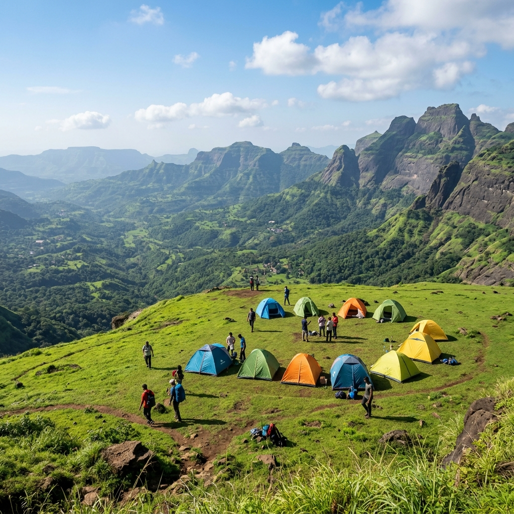
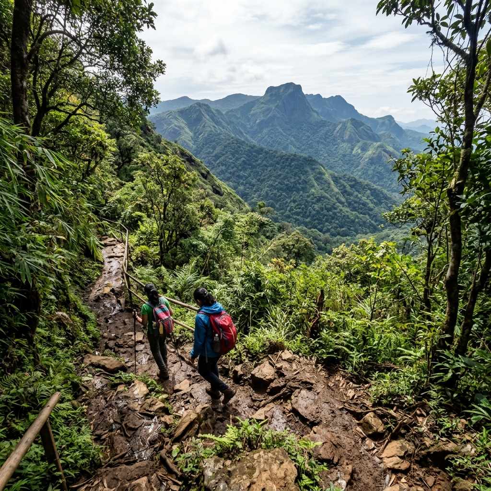
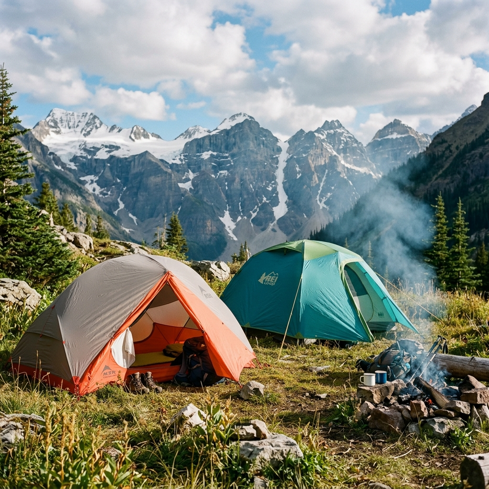

About the Camping Location
Kalavantin Durg is one of Maharashtra's most iconic trekking destinations, located near Panvel. Self-camping is usually done at Prabalmachi village, situated on a flat scenic plateau between Kalavantin Durg and Prabalgad Fort.
The campsite offers stunning views of the Sahyadri mountains, Matheran plateau, and surrounding valleys. Unlike commercial campsites, this location provides a raw and authentic camping experience where nature is the main attraction. Many trekkers choose to stay overnight to enjoy a beautiful sunrise from the Kalavantin Durg summit the next morning.
Campsite
Prabalmachi Village
Views
Sahyadri Mountains & Valley

Best Time to Camp
Plan your camping based on the seasons to ensure comfortable night temperatures and clear views.
Winter Camping
October to February: Highly recommended. Best weather, cool night temperatures, and crystal clear views. Sunrise views are spectacular between November and February.
Monsoon Period
June to September: Beautiful greenery blankets the region, but heavy downpours are common. Monsoon camping is only for experienced campers.
Summer Period
March to May: Very hot, dry, and less comfortable. Campers should prepare for high heat and minimal water flow during these months.
How to Reach
Travel details to reach Thakurwadi base village and the subsequent trek up to Prabalmachi.
Base Village Access
Drive from Mumbai to Thakurwadi Base Village (approx. 50 km). Private vehicle parking is available directly at Thakurwadi Village. Mobile network works well at most locations along the trail.
Mumbai to Thakurwadi: ~50 kmRail & Auto Route
Take a train to Panvel Railway Station. Thakurwadi base village is located approximately 15 km from the station. Auto-rickshaws and taxis are easily available outside Panvel station.
Panvel Station to Thakurwadi: ~15 kmThe Trek Route
Trek from Thakurwadi village to Prabalmachi campsite. The hike takes around 1.5 to 2 hours of moderate climbing. The Kalavantin Summit is another 45 to 60 minutes steep climb further from the Prabalmachi plateau.
Distance from Major Cities
~15 km
Panvel Station
~25 km
Kharghar
~50 km
Mumbai
~55 km
Thane
~120 km
Pune
Camping Difficulty Level

Self-camping at Prabalmachi has a Moderate difficulty level. While the trail is suitable for beginners with basic fitness, carrying heavy camping gear like tents, sleeping bags, and food supplies up the mountain increases the effort required.
It is excellent for trekking enthusiasts looking for a raw experience, but family camping is generally not recommended due to lack of standard hotel amenities. Night trekking up the trail should be completely avoided without professional local guidance.
Grade
Moderate (Due to gear weight)
Suitability
Trek & Camping Enthusiasts
Tent Pitching Area
Prabalmachi village features vast open fields with flat ground highly suitable for pitching dome and ridge tents. The campsite provides sweeping natural views of the Sahyadri mountains and surrounding valley landscapes.
Keep in mind there is limited shade during the daytime on the open plateau, so planning to pitch tents during late afternoon is recommended. The local villagers coordinate the land usage and may direct you to pitch tents only on designated, flat agricultural borders or camping grounds.
Ground Type
Flat, open grass fields
Day shade
Very limited (Open plateau)

Water Availability
Planning your fluid resource allocation is critical before ascending to Prabalmachi.
Personal Supply
Carry at least 2 to 3 liters of drinking water per person. Carry water bottles from the Thakurwadi base village before starting the hike.
Local Villagers
The local villagers at Prabalmachi may provide water upon request. However, do not depend entirely on village resources as stocks can run low on busy weekends.
Natural Sources
Do not depend on natural streams or springs for drinking water as they may not be filtered or safe for consumption.
Safety Information
Key precautions to maintain visitor safety during overnight stays on the high plateau.
Wind & Edges
Avoid pitching tents or wandering near the cliff edges. Strong wind gusts are highly possible, especially during winter nights and monsoon seasons.
Group Travel
Wild animals are rarely seen, but caution is advised. Travel and camp in groups of friends rather than alone. Keep a small first-aid kit handy.
Backup Power
Carry a reliable headlamp or flashlight and extra backup batteries. Always inform your family members about your camping location plans.
Campfire Rules
Maintain respect for the local ecosystem and forest department rules.
Dry Seasons
Campfires should be completely avoided during dry summer months to prevent accidental forest fires in the dry vegetation.
Supervision
Never leave a campfire unattended. Ensure it is fully extinguished with soil or water before you sleep or leave the campsite.
Local Rules
Do not damage local trees or cut branches for firewood. Collect dry fallen twigs only. Seeking permission from the locals is recommended.
Things to Carry
Checklist of items needed for a successful self-camping setup at Prabalmachi.
Shelter & Bedding
A reliable waterproof tent, sleeping bag, rain cover, and dynamic solar chargers or high-capacity power banks.
Gear & Shoes
Comfortable trekking shoes with good grip, a powerful headlamp or torch, warm winter jacket, and extra layers of dry clothing.
Food & Medical
Plenty of dry snacks, energy bars, water bottles (minimum 3L), a basic first-aid kit, and personal garbage bags.
Monsoon Camping Tips
Special guidelines if you plan to pitch tents during heavy monsoon downpours.
Waterproof Tents
Use high-quality double-layer waterproof tents. Make sure you clear drainage paths around your tent pitching spot.
Dry Clothing
Carry extra sets of clothes and socks sealed in waterproof plastic bags. Keep all phone devices inside dry pouches.
Slippery Trails
The trek paths from Thakurwadi become extremely slippery during heavy rains. Avoid camping during extreme weather forecasts or heavy thunderstorms.
Camping Permissions & Connectivity
Respect the local rules and prepare for a raw, off-grid plateau camping experience.
Entry Fees
A nominal entry fee or camping fee may be collected by local village development committees or forest committees at Thakurwadi. Camping is generally allowed around the Prabalmachi area.
Network & Power
Jio and Airtel networks generally work at the campsite, but quality varies. There is no electricity at Prabalmachi, so carrying high-capacity power banks and solar chargers is essential.
Village Rules
Follow local village codes: avoid littering, do not play loud music or create noise pollution, and respect local residents, houses, and private agricultural fields.
Nearby Attractions
Popular Sahyadri trekking destinations that can be accessed from the campsite.
Kalavantin Durg
The iconic peak with steep rock-cut steps. Climbed early in the morning from the campsite to enjoy beautiful sunrise views.
Prabalgad Fort
A massive flat-topped forest fort situated adjacent to Prabalmachi, famous for its dense jungle walks and viewpoints.
Matheran & Irshalgad
Matheran hill station and the technical needle peak of Irshalgad Fort are clearly visible from the Prabalmachi plateau.
Crowd Level & Leave No Trace
Understand visitor trends and commit to keeping the pristine plateau clean.
Weekdays
Low crowd levels. Extremely peaceful and quiet atmosphere, making it ideal for nature photography and calm mountain stays.
Weekends
Moderate to high crowds during monsoon and winter weekends. Sunrise viewpoints and camping spots can become busy.
Leave No Trace
Carry all plastic waste and garbage back. Avoid plastic usage, do not damage trees, and respect the local residents and environment.
Location & Coordinates
Prabalmachi Village, Kalavantin Durg Base, Panvel, Maharashtra, India